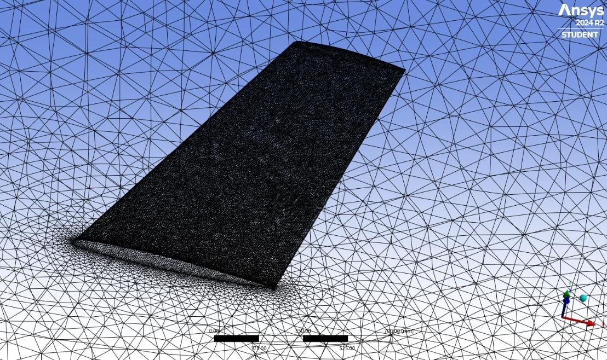
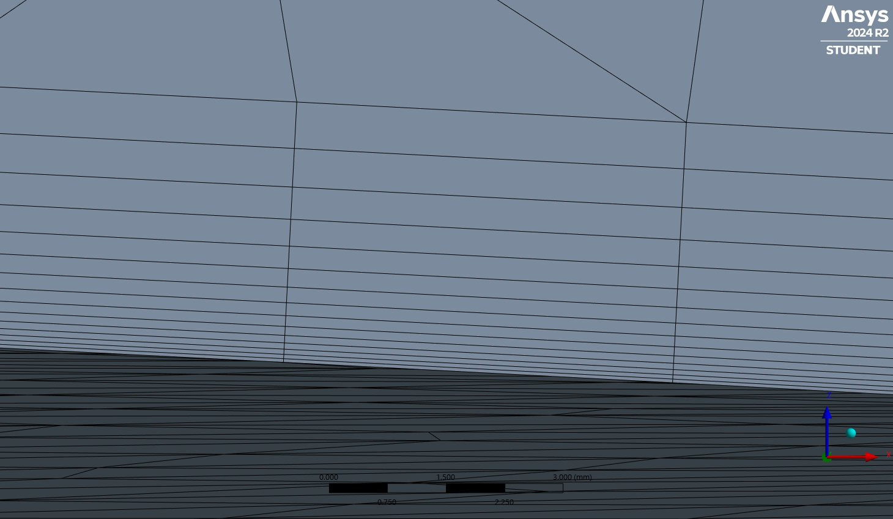
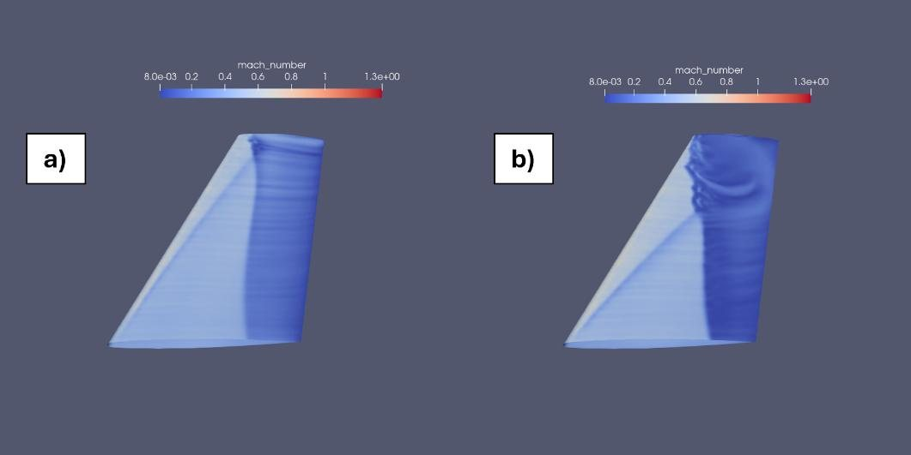
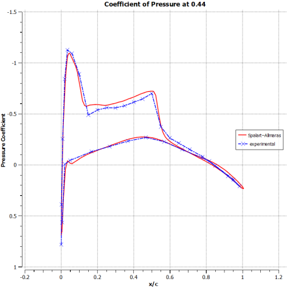
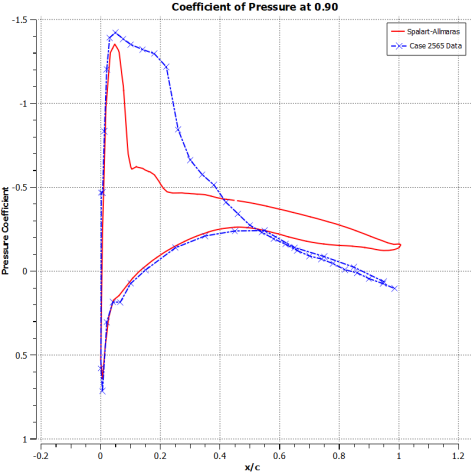
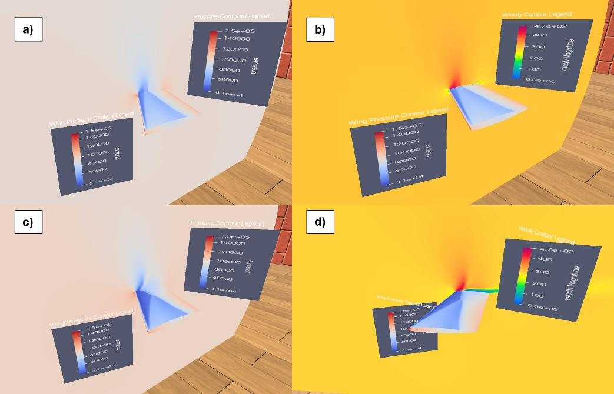
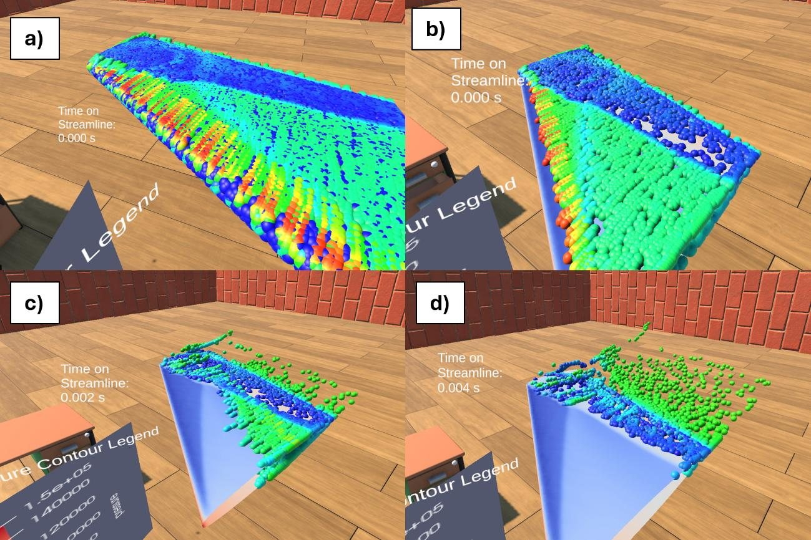
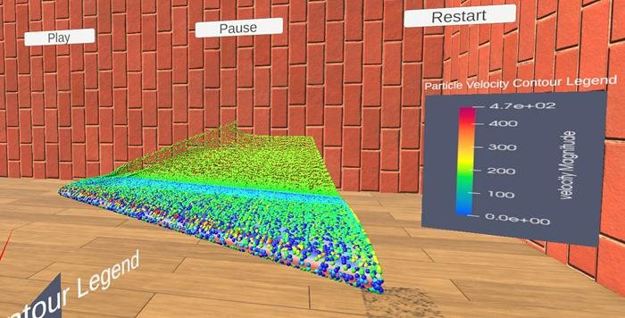
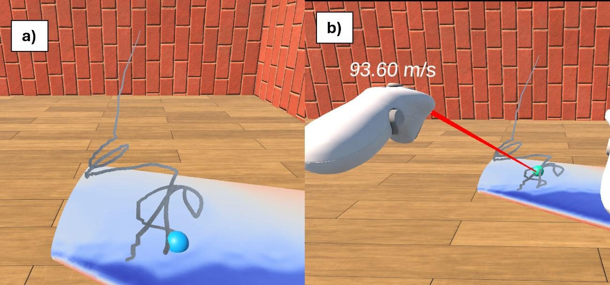

1. CFD setup
- Benchmark case: the ONERA M6 wing at Mach 0.84 and Re = 11.72×106, at 3.06° (attached flow) and 6.06° (shock-induced separation).
- Mesh designed from first principles: I calculated the first inflation layer height (4.64×10−5 m for y+ ≈ 30) from Sutherland's law, the Reynolds number and a skin-friction estimate, with local refinement at the wing and wake.
- Solver: pressure-based steady RANS with the Spalart–Allmaras turbulence model.



2. Validation
A four-level mesh study showed the results had converged: going from the fine to the ultra-fine mesh changed lift by under 0.5%. At 3.06°, lift came within 1.2% of the wind tunnel value. At 6.06°, I traced the larger error (9.6% on lift, with drag over-predicted) to the turbulence model's known weakness with separated flow, where the pressure data diverges beyond about 65% span.


3. VR environment
I built the environment in Unity with the XR Interaction Toolkit, writing the data handling and interaction systems in C#:
- Data pipeline: Fluent → ParaView → Blender → Unity, plus a custom shader so the VR colours exactly match the CFD data.
- Grabbable contour planes: slide pressure and velocity slices from wing root to tip by hand.
- Animated particle flow: a pooled C# particle system plays the flow in real time, so separation and recirculation are obvious.
- Velocity probe: point at any particle to read its speed, for example 454 m/s at the suction peak and 20.7 m/s behind the shock.




What I'd take into my next project
- Validate before you present. A convincing picture of a wrong answer is still a wrong answer, so the CFD was checked against experiment before it went anywhere near VR.
- Plan the data flow early. Getting data between tools took much of the first half of the project. Settling the file formats up front would have saved a lot of time.
- Set a performance target from day one. The particle scene ran at about 42 FPS against the headset's 72 Hz, which I'd design around from the start next time.
- Test with real users. The next step would be formal usability studies with students, to measure the learning benefit.
Want the detail?
The full write-up covers the meshing calculations, every validation plot, the flow features, the shader code, the comparison with ParaView, and the limitations.
Read the full write-up →